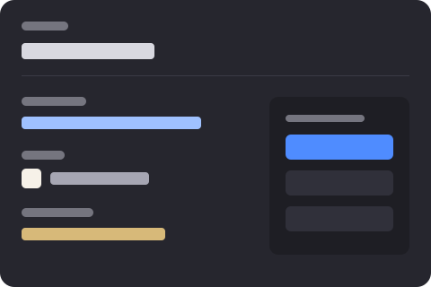

--plum
Deep ground, hero panels
Development
Open this page in werkstatt while you build the app. Tokens, both themes, both breakpoints, and every component contract — already in the HTML, with JavaScript only flipping classes.
Tokens — :root
Edit these from the token list. Dark values live on the theme selector, not as a second sheet.
--plum
Deep ground, hero panels
--violet
Primary action, links
--blush
Soft fill, open state
--lime
Loud accent, focus
Tabs — aria-selected / hidden
Select this panel and style .tab-panel. The visible tab is the one without hidden.
This copy exists in the HTML even when the tab is closed. Preview can reveal it; Edit can still find it in the tree.
Accordion — .is-open, aria-expanded, hidden
This one starts open so you can style .accordion.is-open without Preview. The blush fill marks it.
Default closed. The panel stays in the file; hidden is the state, not a missing node.
Dropdown — .is-open
Carousel — real children, horizontal scroll
Matching rules
Style .card .card-title from here. The title is a child, not a parallel layer.
Breakpoints
Switch viewport in the app. This track goes full width on tablet; slides grow on mobile.
Images
Swap the panel picture on this page with one click. No picture or srcset.
Dialog — content in the HTML
Form — labels, 46px targets, focus-visible
Reference image
